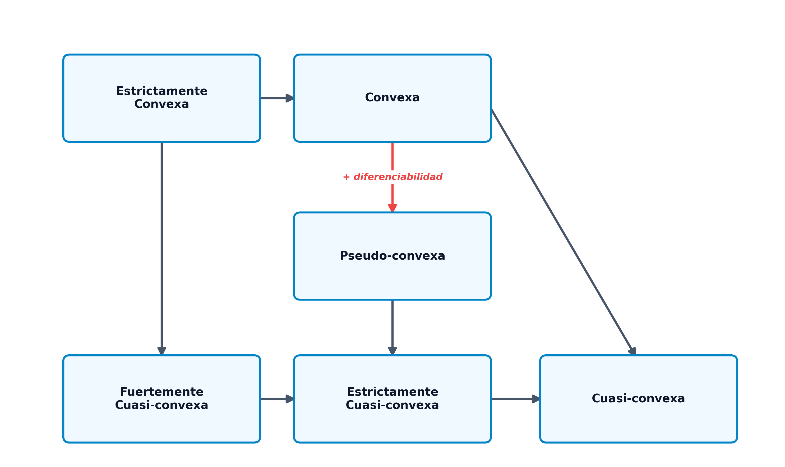

3 Análisis Convexo
El análisis convexo constituye la columna vertebral de la optimización matemática moderna. Históricamente, la optimización estuvo dominada por el paradigma de la linealidad frente a la no linealidad. Sin embargo, a finales del siglo XX se produjo un cambio de paradigma fundamental, resumido por el matemático R. Tyrrell Rockafellar: “la divisoria fundamental en optimización no es entre linealidad y no linealidad, sino entre convexidad y no convexidad” (Rockafellar 1970). Bajo la hipótesis de convexidad, cualquier óptimo local se convierte de manera natural en un óptimo global (Boyd y Vandenberghe 2004). Esta propiedad crucial no solo simplifica la búsqueda teórica de soluciones, sino que garantiza la convergencia fiable y veloz de los algoritmos numéricos, evitando que queden atrapados en mínimos locales subóptimos.
En este capítulo, estudiaremos los conjuntos convexos y las operaciones que preservan esta propiedad, las caracterizaciones de primer y segundo orden para funciones convexas diferenciables y no diferenciables (subgradientes), las propiedades fundamentales de sus extremos y las generalizaciones teóricas de la convexidad (cuasi-convexidad y pseudo-convexidad).
Al finalizar este capítulo, serás capaz de:
- Identificar y demostrar si un conjunto dado en \(\mathbb{R}^n\) es convexo aplicando la definición o las propiedades algebraicas de conservación.
- Diferenciar entre combinaciones lineales, afines, cónicas y convexas, analizando la estructura geométrica de sus envolturas.
- Comprender e interpretar los Teoremas de Separación de Hiperplanos y del Hiperplano de Soporte.
- Caracterizar la convexidad de funciones mediante las propiedades del epígrafe, los conjuntos de nivel y las caracterizaciones de primer y segundo orden (gradiente y hessiana).
- Calcular el subdiferencial de funciones convexas no diferenciables en puntos singulares de esquina o codo, y aplicar el cálculo de subgradientes.
- Aplicar el Teorema Fundamental de la Optimización Convexa para deconstruir y verificar la globalidad y unicidad de los mínimos.
- Clasificar y relacionar las funciones cuasi-convexas, pseudo-convexas y sus variantes, comprendiendo sus implicaciones en la optimización restringida.
3.1 Conjuntos Convexos
3.1.1 Definición y Conceptos Básicos
Un conjunto es convexo si no presenta “entrantes” o cavidades, de modo que la conexión recta entre cualquier pareja de sus puntos está totalmente contenida en él.
- Conjunto Convexo: Un conjunto \(\mathcal{S} \subseteq \mathbb{R}^n\) es convexo si: \[ \forall x_1, x_2 \in \mathcal{S}, \quad \forall \lambda \in (0, 1) \implies \lambda x_1 + (1 - \lambda) x_2 \in \mathcal{S} \]
- Combinación Lineal Convexa: Un punto \(x\) es una combinación lineal convexa de un conjunto finito de puntos \(\{x_1, \dots, x_k\} \subset \mathbb{R}^n\) si puede expresarse de la forma: \[ x = \sum_{i=1}^k \lambda_i x_i \quad \text{con} \quad \lambda_i \ge 0 \quad \text{y} \quad \sum_{i=1}^k \lambda_i = 1 \]
- Combinación Afín: Se obtiene eliminando la condición de no negatividad de los coeficientes (\(\lambda_i \in \mathbb{R}\) con \(\sum_{i=1}^k \lambda_i = 1\)). Genera subespacios afines (rectas, planos, etc.).
- Combinación Conica: Se define exigiendo únicamente la no negatividad de los coeficientes (\(\lambda_i \ge 0\) sin exigir que sumen 1). Genera conos convexos.
- Combinación Lineal: Se define eliminando ambas condiciones (\(\lambda_i \in \mathbb{R}\) sin restricciones). Genera subespacios vectoriales.
3.1.2 Ejemplos de Conjuntos Convexos Básicos
- Hiperplano: Dado un vector normal no nulo \(p \in \mathbb{R}^n\) y un escalar \(\alpha \in \mathbb{R}\), el hiperplano es: \[ \mathcal{H} = \{ x \in \mathbb{R}^n \mid p^T x = \alpha \} \] Representa una superficie plana de dimensión \(n-1\).
- Semiespacio Cerrado: La región del espacio situada en uno de los lados de un hiperplano: \[ \mathcal{H}^- = \{ x \in \mathbb{R}^n \mid p^T x \le \alpha \} \]
- Poliedro o Politopo Convexo: La intersección de un número finito de semiespacios cerrados: \[ \mathcal{P} = \{ x \in \mathbb{R}^n \mid A x \le b \} \] Constituye la región factible típica de la programación lineal. Sus esquinas o vértices se denominan puntos extremos.
- Bola Métrica: Una bola cerrada en \(\mathbb{R}^n\) con centro en \(x_0\) y radio \(r \ge 0\) definida bajo cualquier norma \(\|\cdot\|\): \[ \mathcal{B}_r(x_0) = \{ x \in \mathbb{R}^n \mid \|x - x_0\| \le r \} \]
3.1.3 Operaciones que Conservan la Convexidad
Sean \(\mathcal{S}_1\) y \(\mathcal{S}_2\) dos conjuntos convexos en \(\mathbb{R}^n\). Las siguientes estructuras también son conjuntos convexos:
- Intersección: \[ \mathcal{S}_1 \cap \mathcal{S}_2 \] (Esta propiedad se extiende a la intersección de una familia infinita o arbitraria de conjuntos convexos).
- Suma Directa: \[ \mathcal{S}_1 \oplus \mathcal{S}_2 = \{ x_1 + x_2 \mid x_1 \in \mathcal{S}_1, \ x_2 \in \mathcal{S}_2 \} \]
- Diferencia Directa: \[ \mathcal{S}_1 \ominus \mathcal{S}_2 = \{ x_1 - x_2 \mid x_1 \in \mathcal{S}_1, \ x_2 \in \mathcal{S}_2 \} \]
3.1.4 Envoltura Convexa y Símplices
- Envoltura Convexa (\(\mathcal{H}(\mathcal{S})\)): El conjunto de todas las combinaciones lineales convexas posibles de puntos pertenecientes al conjunto \(\mathcal{S}\): \[ \mathcal{H}(\mathcal{S}) = \left\{ x = \sum_{j=1}^k \lambda_j x_j \;\middle|\; x_j \in \mathcal{S}, \ \lambda_j \ge 0, \ \sum_{j=1}^k \lambda_j = 1 \right\} \]
La envoltura convexa \(\mathcal{H}(\mathcal{S})\) es el menor conjunto convexo que contiene al conjunto \(\mathcal{S}\).
Demostración: Sea \(\mathcal{C}\) cualquier conjunto convexo que contiene a \(\mathcal{S}\) (es decir, \(\mathcal{S} \subseteq \mathcal{C}\)). Supongamos por reducción al absurdo que existe un punto \(x \in \mathcal{H}(\mathcal{S})\) tal que \(x \notin \mathcal{C}\). Como \(x \in \mathcal{H}(\mathcal{S})\), se puede escribir como una combinación lineal convexa \(x = \sum_{j=1}^k \lambda_j x_j\) donde cada \(x_j \in \mathcal{S}\). Dado que \(\mathcal{S} \subseteq \mathcal{C}\), se deduce que todos los puntos generadores \(x_j\) pertenecen a \(\mathcal{C}\). Como \(\mathcal{C}\) es convexo por hipótesis, cualquier combinación lineal convexa de sus elementos debe pertenecer a él, lo que obliga a que \(x \in \mathcal{C}\), contradiciendo la suposición inicial. \(\blacksquare\)
- Símplex: Un politopo convexo generado por la envoltura convexa de \(n+1\) puntos afínmente independientes en \(\mathbb{R}^n\). Un simplex en \(\mathbb{R}^1\) es un segmento, en \(\mathbb{R}^2\) es un triángulo y en \(\mathbb{R}^3\) es un tetraedro.
3.2 Teoremas de Separación e Hiperplano de Soporte
La geometría convexa descansa sobre dos teoremas fundamentales que fundamentan la teoría de la dualidad y los multiplicadores de Lagrange.
3.2.1 Teoremas de Separación de Hiperplanos
Estos teoremas establecen las condiciones bajo las cuales es posible “trazar una frontera plana” (un hiperplano) que separe dos conjuntos convexos disjuntos.
Sean \(\mathcal{C}\) y \(\mathcal{D}\) dos conjuntos convexos disjuntos no vacíos en \(\mathbb{R}^n\). Entonces existe un hiperplano que los separa débilmente. Es decir, existen un vector no nulo \(p \in \mathbb{R}^n\) y un escalar \(\alpha \in \mathbb{R}\) tales que: \[ p^T x \le \alpha, \quad \forall x \in \mathcal{C} \qquad \text{y} \qquad p^T y \ge \alpha, \quad \forall y \in \mathcal{D} \]
Sean \(\mathcal{C}\) y \(\mathcal{D}\) dos conjuntos convexos disjuntos no vacíos en \(\mathbb{R}^n\). Si además \(\mathcal{C}\) es cerrado y \(\mathcal{D}\) es cerrado y acotado (compacto), entonces existe un hiperplano que los separa estrictamente. Es decir, existen un vector no nulo \(p \in \mathbb{R}^n\) y un escalar \(\alpha \in \mathbb{R}\) tales que: \[ p^T x < \alpha, \quad \forall x \in \mathcal{C} \qquad \text{y} \qquad p^T y > \alpha, \quad \forall y \in \mathcal{D} \]
3.2.2 Teorema del Hiperplano de Soporte
Un hiperplano de soporte para un conjunto \(\mathcal{S}\) en un punto de su frontera \(x_0 \in \partial \mathcal{S}\) es un hiperplano que pasa por \(x_0\) y deja a todo el conjunto \(\mathcal{S}\) contenido en uno de sus semiespacios cerrados.
Sea \(\mathcal{S}\) un conjunto convexo no vacío en \(\mathbb{R}^n\), y sea \(x_0\) un punto perteneciente a la frontera de \(\mathcal{S}\) (\(x_0 \in \partial \mathcal{S}\)). Entonces existe un hiperplano de soporte para \(\mathcal{S}\) en \(x_0\). Es decir, existe un vector no nulo \(p \in \mathbb{R}^n\) tal que: \[ p^T x \le p^T x_0, \quad \forall x \in \mathcal{S} \]
Este teorema garantiza que para cualquier conjunto convexo siempre podemos “apoyar” un plano sobre cualquier punto de su superficie exterior sin llegar a cruzar el interior del conjunto.
3.3 Funciones Convexas
3.3.1 Definición y Significado Geométrico
- Función Convexa: Sea \(\mathcal{S} \subseteq \mathbb{R}^n\) un conjunto convexo no vacío. Una función \(f: \mathcal{S} \to \mathbb{R}\) es convexa si para todo par de puntos \(x_1, x_2 \in \mathcal{S}\) y cualquier parámetro \(\lambda \in (0, 1)\) se cumple que: \[ f(\lambda x_1 + (1 - \lambda) x_2) \le \lambda f(x_1) + (1 - \lambda) f(x_2) \]
- Función Estrictamente Convexa: Si la desigualdad anterior es estricta (\(<\)) para todo \(x_1 \neq x_2\).
- Función Cóncava: Una función \(f\) es cóncava si su opuesta \(-f\) es convexa.
Geométricamente, una función es convexa si el segmento de cuerda que une los puntos de la gráfica \((x_1, f(x_1))\) y \((x_2, f(x_2))\) queda por encima o sobre la gráfica de la función en dicho intervalo.
3.3.2 Operaciones que Preservan la Convexidad de Funciones
- Suma ponderada positiva: Si \(f_1, \dots, f_k\) son convexas y \(\alpha_1, \dots, \alpha_k \ge 0\), entonces la combinación \(\sum_j \alpha_j f_j\) es convexa.
- Supremo puntual (Máximo): Si \(f_1, \dots, f_k\) son convexas, la función envoltura superior \(f(x) = \max_{j} \{f_j(x)\}\) es convexa.
- Composición afín: Si \(g: \mathbb{R}^m \to \mathbb{R}\) es convexa y \(h(x) = A x + b\) es una función afín, entonces la composición \(f(x) = g(A x + b)\) es convexa.
Sea \(f: \mathcal{S} \to \mathbb{R}\) una función convexa sobre un dominio convexo \(\mathcal{S}\). Para cualquier constante \(\alpha \in \mathbb{R}\), el conjunto de nivel inferior: \[ \mathcal{S}_\alpha = \{ x \in \mathcal{S} \mid f(x) \le \alpha \} \] es un conjunto convexo.
Demostración: Sean \(x_1, x_2 \in \mathcal{S}_\alpha\). Por definición del conjunto de nivel, se cumple que \(f(x_1) \le \alpha\) y \(f(x_2) \le \alpha\). Sea \(\lambda \in (0, 1)\). Como el dominio \(\mathcal{S}\) es convexo, el punto intermedio \(\lambda x_1 + (1 - \lambda) x_0\) pertenece a \(\mathcal{S}\). Aplicando la definición de convexidad de \(f\): \[ f(\lambda x_1 + (1 - \lambda) x_2) \le \lambda f(x_1) + (1 - \lambda) f(x_2) \le \lambda \alpha + (1 - \lambda) \alpha = \alpha \] Por tanto, \(\lambda x_1 + (1 - \lambda) x_2 \in \mathcal{S}_\alpha\), lo que demuestra la convexidad del conjunto de nivel. \(\blacksquare\)
Nota: El recíproco no es cierto en general (una función con conjuntos de nivel convexos no tiene por qué ser convexa; esta propiedad define a las funciones cuasi-convexas).
3.3.3 Epígrafe y Subgradientes
- Epígrafe (\(\text{epi } f\)): El conjunto de puntos en \(\mathbb{R}^{n+1}\) situados sobre o por encima de la gráfica de la función: \[ \text{epi } f = \{ (x, y) \in \mathcal{S} \times \mathbb{R} \mid y \ge f(x) \} \]
Una función \(f: \mathcal{S} \to \mathbb{R}\) es convexa si y solo si su epígrafe \(\text{epi } f\) es un conjunto convexo en \(\mathbb{R}^{n+1}\).
Demostración: \((\Longrightarrow)\) Supongamos que \(f\) es convexa. Sean \((x_1, y_1), (x_2, y_2) \in \text{epi } f\) y \(\lambda \in (0, 1)\). Por definición de epígrafe, \(y_1 \ge f(x_1)\) y \(y_2 \ge f(x_2)\). Evaluando la combinación lineal: \[ \lambda y_1 + (1 - \lambda) y_2 \ge \lambda f(x_1) + (1 - \lambda) f(x_2) \ge f(\lambda x_1 + (1 - \lambda) x_2) \] Como \(\mathcal{S}\) es convexo, el punto combinado pertenece a \(\mathcal{S}\), y el par combinado pertenece a \(\text{epi } f\), demostrando su convexidad.
\((\Longleftarrow)\) Supongamos que \(\text{epi } f\) es un conjunto convexo. Sean \(x_1, x_2 \in \mathcal{S}\). Los puntos \((x_1, f(x_1))\) y \((x_2, f(x_2))\) pertenecen a \(\text{epi } f\). Por convexidad del epígrafe, para todo \(\lambda \in (0, 1)\): \[ \lambda (x_1, f(x_1)) + (1 - \lambda)(x_2, f(x_2)) = (\lambda x_1 + (1 - \lambda) x_2, \lambda f(x_1) + (1 - \lambda) f(x_2)) \in \text{epi } f \] Lo que implica directamente que \(\lambda f(x_1) + (1 - \lambda) f(x_2) \ge f(\lambda x_1 + (1 - \lambda) x_2)\), es decir, \(f\) es convexa. \(\blacksquare\)
Subgradiente y Subdiferencial: Para funciones no diferenciables (que presentan picos o codos), el gradiente no existe en ciertos puntos. Generalizamos este concepto mediante el subgradiente. Un vector \(\xi \in \mathbb{R}^n\) es un subgradiente de la función convexa \(f\) en el punto \(x_0 \in \mathcal{S}\) si: \[ f(x) \ge f(x_0) + \xi^T(x - x_0), \quad \forall x \in \mathcal{S} \] Geométricamente, define un hiperplano que apoya a la función desde abajo en \(x_0\). El conjunto de todos los subgradientes en \(x_0\) se denomina subdiferencial y se denota por \(\partial f(x_0)\).
El subdiferencial \(\partial f(x_0)\) es siempre un conjunto convexo y cerrado, cuyo análisis detallado e implicaciones en optimización no diferenciable se estudian extensamente en el análisis convexo clásico (Rockafellar 1970; Boyd y Vandenberghe 2004). Si la función es diferenciable en \(x_0\), el subdiferencial contiene un único elemento que es el gradiente: \(\partial f(x_0) = \{\nabla f(x_0)\}\).
El cálculo con subgradientes sigue reglas análogas al cálculo diferencial estándar:
- Regla de la Suma: Si \(f_1, f_2\) son funciones convexas, el subdiferencial de su suma cumple: \[ \partial (f_1(x) + f_2(x)) = \partial f_1(x) \oplus \partial f_2(x) \]
- Multiplicación Escalar: Para cualquier constante \(\alpha \ge 0\): \[ \partial (\alpha f(x)) = \alpha \partial f(x) \]
- Máximo de Funciones: Si \(f(x) = \max \{f_1(x), f_2(x)\}\) con \(f_1, f_2\) convexas: \[ \partial f(x) = \mathcal{H}(\cup_{i \in \mathcal{I}(x)} \partial f_i(x)) \] donde \(\mathcal{I}(x)\) es el conjunto de índices de las funciones que alcanzan el máximo en el punto \(x\).
Consideremos la función convexa definida por tramos: \[ f(x) = \max \{ |x| - 4, \ (x - 2)^2 - 4 \} \] Analicemos su subdiferencial \(\partial f(x_0)\) en diferentes regiones de la recta real:
- Región diferenciable lineal: Para \(x_0 \in (1, 4)\), la función coincide con la recta \(x - 4\). Su derivada es constante e igual a 1. Por tanto, el subdiferencial es el conjunto unitario: \(\partial f(x_0) = \{1\}\).
- Región diferenciable cuadrática: Para \(x_0 < 1\) o \(x_0 > 4\), la función coincide con la parábola \((x-2)^2 - 4\). La derivada es \(2(x_0 - 2)\). Así, \(\partial f(x_0) = \{2(x_0 - 2)\}\).
- Punto singular \(x_0 = 1\): La función presenta un codo donde intersecan la parábola y la recta. La derivada lateral izquierda (cuadrática) es \(2(1-2) = -2\), y la derivada lateral derecha (lineal) es \(1\). El subdiferencial está formado por todas las pendientes intermedias posibles (combinación convexa de las derivadas laterales): \[ \partial f(1) = [-2, 1] \]
- Punto singular \(x_0 = 4\): La derivada lateral izquierda es \(1\) y la derecha es \(2(4-2) = 4\). El subdiferencial es el intervalo: \[ \partial f(4) = [1, 4] \]
3.4 Caracterización de Funciones Convexas Diferenciables
3.4.1 Caracterización de Primer Orden
Cuando una función es diferenciable, podemos caracterizar su convexidad analizando su plano tangente.
Sea \(f: \mathcal{S} \to \mathbb{R}\) una función diferenciable en un conjunto convexo y abierto \(\mathcal{S}\).
- \(f\) es convexa si y solo si: \[ f(x) \ge f(x_0) + \nabla f(x_0)^T (x - x_0), \quad \forall x, x_0 \in \mathcal{S} \]
- \(f\) es estrictamente convexa si y solo si: \[ f(x) > f(x_0) + \nabla f(x_0)^T (x - x_0), \quad \forall x, x_0 \in \mathcal{S} \text{ con } x \neq x_0 \]
Significado geométrico: La aproximación lineal de primer orden (plano tangente en cualquier punto \(x_0\)) es un estimador inferior global de la función. Es decir, la gráfica de la función se apoya en su totalidad sobre el plano tangente.
Una función diferenciable \(f\) es convexa en un conjunto convexo abierto \(\mathcal{S}\) si y solo si su gradiente es un operador monótono: \[ (\nabla f(x_2) - \nabla f(x_1))^T(x_2 - x_1) \ge 0, \quad \forall x_1, x_2 \in \mathcal{S} \]
Demostración: \((\Longrightarrow)\) Si \(f\) es convexa, por la caracterización de primer orden se cumplen simultáneamente: \[ f(x_1) \ge f(x_2) + \nabla f(x_2)^T (x_1 - x_2) \] \[ f(x_2) \ge f(x_1) + \nabla f(x_1)^T (x_2 - x_1) \] Sumando ambas inecuaciones miembro a miembro: \[ f(x_1) + f(x_2) \ge f(x_2) + f(x_1) + \nabla f(x_2)^T(x_1 - x_2) + \nabla f(x_1)^T(x_2 - x_1) \] Cancelando términos comunes y reordenando: \[ 0 \ge (\nabla f(x_1) - \nabla f(x_2))^T (x_2 - x_1) \implies (\nabla f(x_2) - \nabla f(x_1))^T(x_2 - x_1) \ge 0 \] \((\Longleftarrow)\) Se demuestra de manera análoga aplicando el teorema del valor medio. \(\blacksquare\)
3.4.2 Caracterización de Segundo Orden (Hessiana)
La convexidad puede verificarse localmente analizando la concavidad o curvatura de segundo orden dada por la matriz hessiana en todo el dominio.
Sea \(f: \mathcal{S} \to \mathbb{R}\) una función dos veces diferenciable en un conjunto convexo abierto \(\mathcal{S}\).
- \(f\) es convexa si y solo si su matriz hessiana es semidefinida positiva en todo punto de \(\mathcal{S}\): \[ \nabla^2 f(x) \succeq 0, \quad \forall x \in \mathcal{S} \]
- Si la matriz hessiana es definida positiva en todo el dominio (\(\nabla^2 f(x) \succ 0, \forall x \in \mathcal{S}\)), entonces \(f\) es estrictamente convexa.
Analicemos la convexidad de tres funciones de prueba:
- Ejemplo 1: \[ f(x_1, x_2, x_3) = x_1 x_2 + 2x_1^2 + x_2^2 + 2x_3^2 - 6x_1 x_3 \] La matriz hessiana de esta función cuadrática es constante: \[ \nabla^2 f = \begin{pmatrix} 4 & 1 & -6 \\ 1 & 2 & 0 \\ -6 & 0 & 4 \end{pmatrix} \] Calculamos los menores principales líderes para aplicar el criterio de Sylvester:
- \(M_1 = 4 > 0\).
- \(M_2 = 4 \cdot 2 - 1^2 = 7 > 0\).
- \(M_3 = \det(\nabla^2 f) = 4(8) - 1(4) - 6(12) = -20 < 0\). Al ser el determinante negativo, la matriz es indefinida, por lo que la función no es ni cóncava ni convexa en \(\mathbb{R}^3\).
- Ejemplo 2: \[ f(x_1, x_2) = 10 - 2(x_2 - x_1^2)^2 \] La matriz hessiana es variable y depende del punto: \[ \nabla^2 f(x) = \begin{pmatrix} 8x_2 - 24x_1^2 & 8x_1 \\ 8x_1 & -4 \end{pmatrix} \] Para que sea cóncava se requiere \(\nabla^2 f(x) \preceq 0\), lo que exige que los menores verifiquen: \[ 8x_2 - 24x_1^2 \le 0 \qquad \text{y} \qquad -4(8x_2 - 24x_1^2) - 64x_1^2 \ge 0 \implies 32(x_1^2 - x_2) \ge 0 \] Esto define una región del plano donde \(x_2 \le x_1^2\).
- Ejemplo 3: \[ f(x, y, z) = x^2 + 3y^2 + z^2 + xy - 4z - 5x + 14 \] Su hessiana es constante: \[ \nabla^2 f = \begin{pmatrix} 2 & 1 & 0 \\ 1 & 6 & 0 \\ 0 & 0 & 2 \end{pmatrix} \] Menores principales: \(M_1 = 2 > 0\), \(M_2 = 11 > 0\), \(M_3 = 22 > 0\). Al ser definida positiva, la función es estrictamente convexa en todo el espacio.
3.5 Óptimos de una Función Convexa
3.5.1 El Teorema Fundamental de la Optimización Convexa
La convexidad simplifica drásticamente la búsqueda de óptimos al eliminar la distinción entre mínimos locales y globales.
Sea \(f: \mathcal{S} \to \mathbb{R}\) una función convexa sobre un conjunto convexo \(\mathcal{S}\).
- Cualquier mínimo local de \(f\) en \(\mathcal{S}\) es también un mínimo global.
- Si la función \(f\) es estrictamente convexa, el mínimo global (si existe) es único.
Demostración: 1. Sea \(x^*\) un mínimo local de \(f\) en \(\mathcal{S}\). Por definición, existe un radio \(\epsilon > 0\) tal que \(f(x) \ge f(x^*)\) para todo \(x \in \mathcal{S}\) con \(\|x - x^*\| < \epsilon\). Supongamos por contradicción que \(x^*\) no es un mínimo global, lo que implica que existe un punto \(y \in \mathcal{S}\) tal que \(f(y) < f(x^*)\). Construimos una combinación lineal convexa de ambos puntos: \(x(\lambda) = \lambda y + (1-\lambda) x^*\) para \(\lambda \in (0, 1)\). Como el dominio \(\mathcal{S}\) es convexo, \(x(\lambda) \in \mathcal{S}\). Elegimos un \(\lambda\) suficientemente pequeño de forma que el punto \(x(\lambda)\) entre dentro de la bola de radio \(\epsilon\) alrededor de \(x^*\). Aplicando la propiedad de convexidad de \(f\): \[ f(x(\lambda)) \le \lambda f(y) + (1 - \lambda) f(x^*) < \lambda f(x^*) + (1 - \lambda) f(x^*) = f(x^*) \] Obtenemos que \(f(x(\lambda)) < f(x^*)\), lo cual contradice directamente la suposición de que \(x^*\) es un mínimo local. Por tanto, no puede existir tal punto \(y\), y \(x^*\) es un mínimo global. 2. Supongamos que \(f\) es estrictamente convexa y que existen dos mínimos globales distintos, \(x^*\) e \(y^*\), con \(f(x^*) = f(y^*) = \alpha\). Sea el punto medio \(z = \frac{1}{2} x^* + \frac{1}{2} y^* \in \mathcal{S}\). Por la convexidad estricta de \(f\): \[ f(z) < \frac{1}{2} f(x^*) + \frac{1}{2} f(y^*) = \alpha \] Resulta que \(f(z) < \alpha\), lo que contradice que \(\alpha\) sea el valor mínimo de la función. Por tanto, el mínimo global debe ser único. \(\blacksquare\)
3.5.2 Condición Variacional de Optimalidad
- Caracterización con subgradientes: Un punto \(x^*\) es mínimo global de la función convexa \(f\) en \(\mathcal{S}\) si y solo si el vector nulo \(0\) es un subgradiente de \(f\) en \(x^*\): \[ 0 \in \partial f(x^*) \]
- Caracterización variacional diferenciable: Si \(f\) es diferenciable, un punto \(x^*\) es mínimo global si y solo si: \[ \nabla f(x^*)^T (x - x^*) \ge 0, \quad \forall x \in \mathcal{S} \] Interpretación geométrica: El gradiente \(\nabla f(x^*)\) forma un ángulo agudo u obtuso con cualquier dirección que apunte hacia el interior del conjunto factible desde \(x^*\), lo que impide la existencia de direcciones de descenso admisibles.
3.6 Maximización de Funciones Convexas
La maximización de una función convexa es un problema no convexo y, por tanto, sumamente complejo.
- Las condiciones necesarias de primer orden (gradiente nulo en el interior) suelen identificar mínimos locales, no máximos.
- Propiedad de los Puntos Extremos: Si maximizamos una función convexa \(f\) sobre un politopo convexo y acotado (compacto) \(\mathcal{S}\), la teoría matemática garantiza que el máximo global se sitúa en alguno de los puntos extremos (vértices) del politopo. Esto justifica que los algoritmos de maximización convexa se centren exclusivamente en explorar los vértices del espacio de soluciones.
3.7 Generalizaciones de la Convexidad
Para mantener las ventajas de la optimalidad global sobre una familia de problemas más amplia, relajamos las exigencias de la convexidad pura:
3.7.1 Funciones Cuasi-convexas
Una función es cuasi-convexa si todos sus conjuntos de nivel inferior \(\mathcal{S}_\alpha\) son convexos. De manera formal: \[ f(\lambda x_1 + (1 - \lambda) x_2) \le \max \{ f(x_1), f(x_2) \}, \quad \forall x_1, x_2 \in \mathcal{S}, \ \forall \lambda \in [0, 1] \]
- Cuasi-convexidad Estricta: \[ f(\lambda x_1 + (1 - \lambda) x_2) < \max \{ f(x_1), f(x_2) \}, \quad \forall x_1, x_2 \in \mathcal{S} \text{ con } f(x_1) \neq f(x_2) \]
Si \(f: \mathcal{S} \to \mathbb{R}\) es una función estrictamente cuasi-convexa definida en un conjunto convexo \(\mathcal{S}\), entonces cualquier mínimo local es también un mínimo global.
Demostración: Supongamos por contradicción que \(x^*\) es un mínimo local que no es global. Entonces existe un punto \(y \in \mathcal{S}\) tal que \(f(y) < f(x^*)\). Para todo \(\lambda \in (0, 1)\), consideramos el punto intermedio \(x(\lambda) = \lambda y + (1-\lambda) x^*\) para \(\lambda \in (0, 1)\). Como \(x^*\) es mínimo local, para valores suficientemente pequeños de \(\lambda\) se cumple que \(f(x^*) \le f(x(\lambda))\). Sin embargo, al ser \(f\) estrictamente cuasi-convexa y cumplirse que \(f(y) < f(x^*)\): \[ f(x(\lambda)) < \max \{ f(y), f(x^*) \} = f(x^*) \] Obtenemos que \(f(x(\lambda)) < f(x^*)\), contradiciendo de forma directa que \(x^*\) sea un mínimo local. \(\blacksquare\)
3.7.2 Funciones Pseudo-convexas
Para funciones diferenciables, la pseudo-convexidad exige que si la función presenta una dirección de subida local, la función crece globalmente en esa dirección: \[ \nabla f(x_1)^T (x_2 - x_1) \ge 0 \implies f(x_2) \ge f(x_1) \]
Esta propiedad es de gran valor práctico: cualquier punto estacionario (\(\nabla f(x^*) = 0\)) en una función pseudo-convexa es de forma garantizada un mínimo global.
- Pseudo-convexidad Estricta: \[ \nabla f(x_1)^T (x_2 - x_1) \ge 0 \implies f(x_2) > f(x_1) \quad \text{para } x_1 \neq x_2 \]
3.7.3 Relaciones entre Categorías de Convexidad
Las relaciones de implicación lógica entre estas definiciones se estructuran de la siguiente manera:
